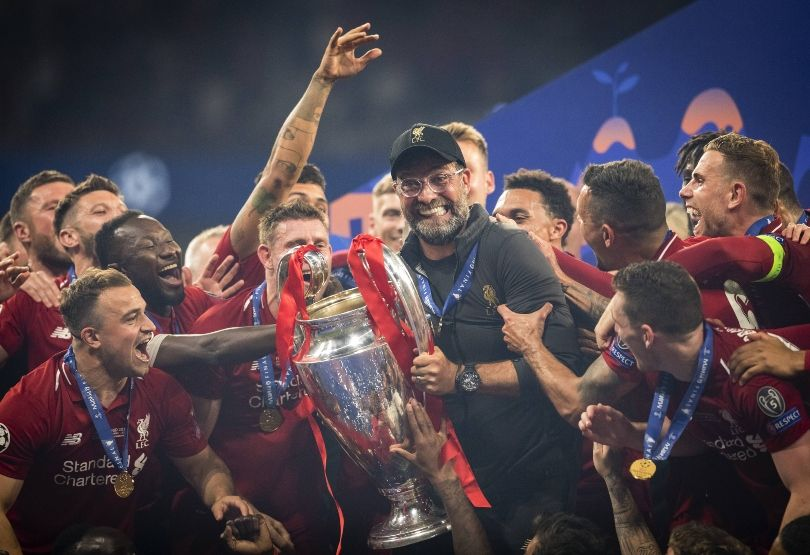
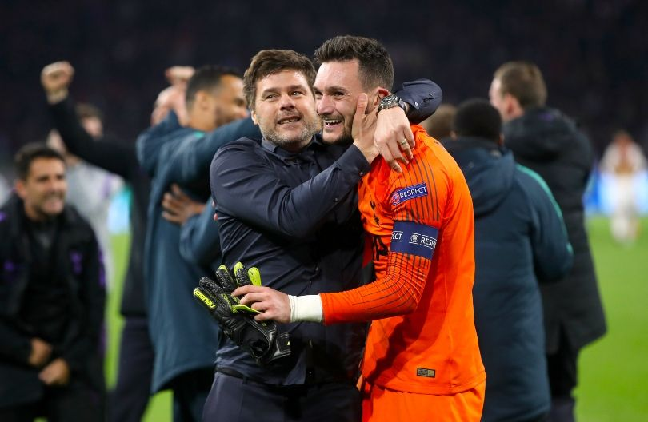
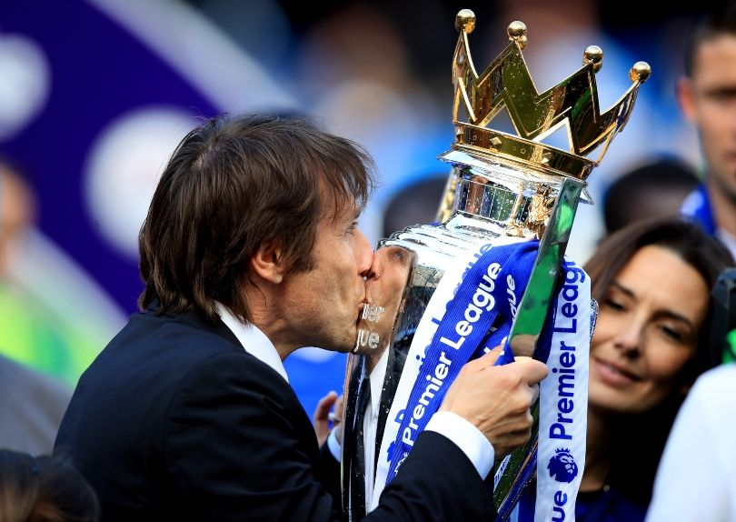
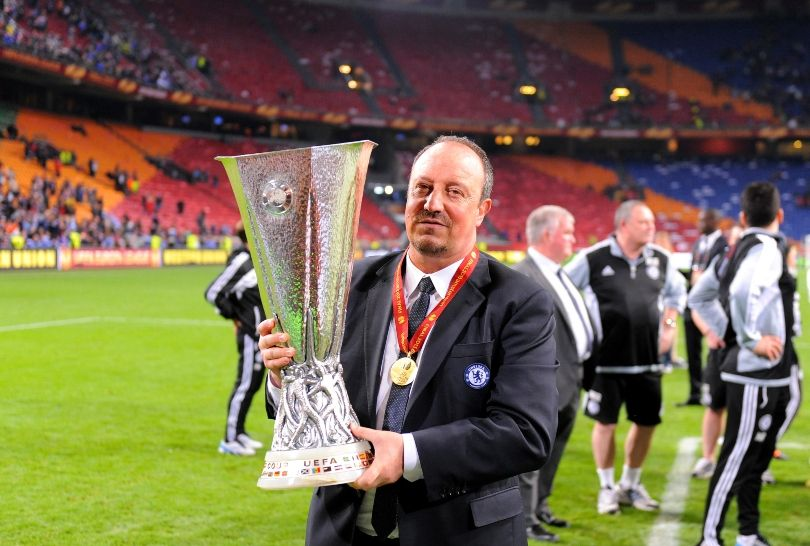
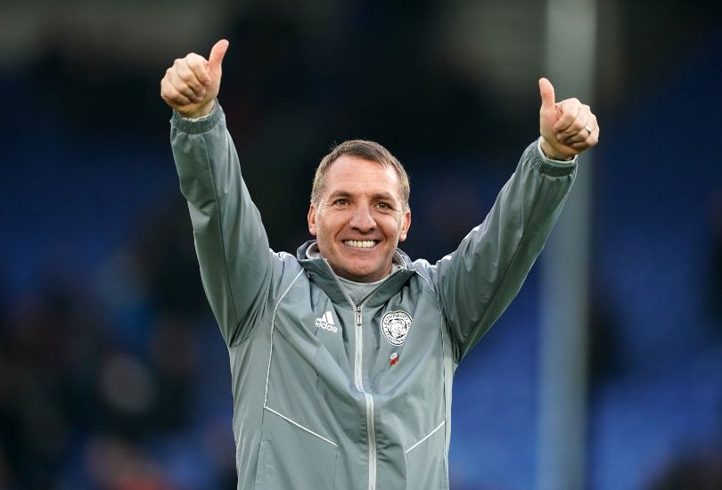
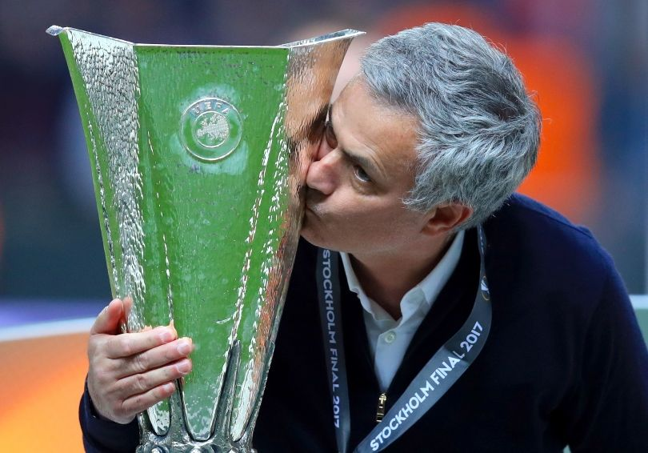
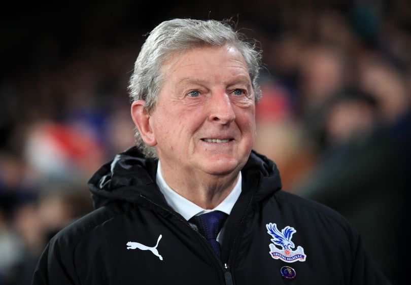
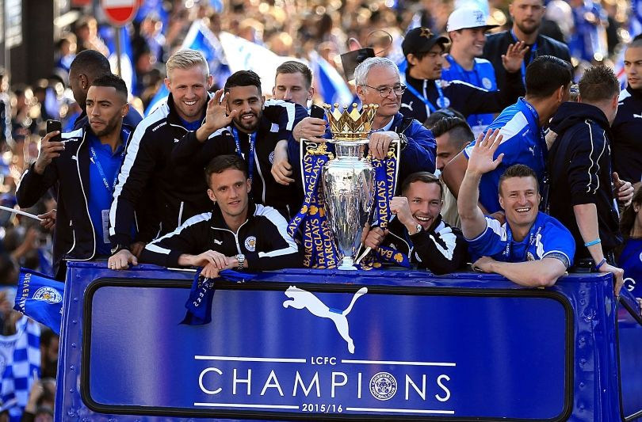

1.PEP GUARDIOLA

Three full seasons and two-fifths of this one. Seven English trophies. Five real trophies. A total of 97 wins from 129 league matches. English football’s first ever centurions. An array of other records broken in 2017/18. One of the great club sides forced into second place with 97 points. Some 169 goals scored in a single season. Two Premier League Manager of the Year awards. More than twice as many Manager of the Month awards as Jose Mourinho. Really, who else could our No.1 for the 2010s be? Guardiola may have spent a fair whack doing it, but Manchester City became a behemoth under the Catalan’s custody. His City side are responsible for more records than Bob Dylan. The Champions League is considered his one disappointment, as well it should be. When it comes to domestic affairs, however, the crown – for now – is his.
2.JURGEN KLOPP
Look, if it was up to us, we would have Klopp joint-first, but… oh, it is up to us? Damn it, now we have to justify why one of English football’s most transformative and underrated – yes, underrated – coaches isn’t the best we’ve seen this decade. In truth, it’s only because our No.1 is even better. There’s not a huge amount of ammunition with which to snipe Klopp: within the space of four years he has taken Liverpool to three European finals, won the Champions League, finished a season with an almost-unprecedented 97 points and primed them for a first league title in 30 years. Having admittedly made Marko Grujic and Steven Caulker his first two transfers for the club, he went on to turn good players into great ones and great ones into superstars. He’s a motivator, yes, but he is also a superb training-ground coach and tactician.
3.MAURICIO POCHETTINO
Oh, stop shouting ‘trophies’ at us. Pochettino did a truly magnificent job across five and a bit years in North London, and it’s not as if his Tottenham team didn’t come close to lifting the silverware they deserved. As well as reaching a Champions League final and League Cup final under Pochettino, Spurs posted in 2016/17 what was then the second-highest points total – now third, behind Liverpool last term as well as Manchester United in 2011/12 – of any Premier League team not to win the title that season. Pochettino’s Spurs won enough points per game to be champions in 11 of the Premier League’s previous 24 seasons. They dropped four points at home in the whole campaign. Their goal difference was a remarkable +60. Ah well. Let’s not forget his time at Southampton, either. Arriving with a translator and a target on his forehead, as a sceptical audience asked why Saints had sacked Nigel Adkins after back-to-back promotions, Pochettino took them up to 8th in his only full season at the club. He’s also responsible, to varying extents, for the international careers of more than a dozen England players.
4.ALEX FERGUSON

As one of only two managers to win the Premier League twice in the 2010s (not to mention a couple of times before that), Ferguson was always going to place highly on this list. But just how high should he be? The arguments in his favour scarcely need retelling in detail – although, to remind, his Manchester United sides dropped two points at home all season en route to becoming champions in 2010/11 and won the league by 11 points in 2012/13 – so let’s instead ask: why isn’t he No.1? Well, part of what made Ferguson’s 2012/13 triumph so impressive was the substandard squad with which he did it. His glorious United teams of Cantona and Keane, Ronaldo and Rooney, averaged around 81 or 82 points per season; in 2012/13, his United team of Welbeck and Cleverley, Anderson and Young, managed 89. But this goes both ways. Despite having 27 years to prepare his successor, Ferguson’s legacy was a trophy cabinet that bulged with cups but also a poisoned chalice. He left a squad full of has-beens and never-woulds, then personally appointed the wrong man to manage them. Also, he completely bottled the 2011/12 title. Sorry, but it’s true.
PEP GUARDIOLA
5.ANTONIO CONTE
As one of only two managers to win the Premier League twice in the 2010s (not to mention a couple of times before that), Ferguson was always going to place highly on this list. But just how high should he be? The arguments in his favour scarcely need retelling in detail – although, to remind, his Manchester United sides dropped two points at home all season en route to becoming champions in 2010/11 and won the league by 11 points in 2012/13 – so let’s instead ask: why isn’t he No.1? Well, part of what made Ferguson’s 2012/13 triumph so impressive was the substandard squad with which he did it. His glorious United teams of Cantona and Keane, Ronaldo and Rooney, averaged around 81 or 82 points per season; in 2012/13, his United team of Welbeck and Cleverley, Anderson and Young, managed 89. But this goes both ways. Despite having 27 years to prepare his successor, Ferguson’s legacy was a trophy cabinet that bulged with cups but also a poisoned chalice. He left a squad full of has-beens and never-woulds, then personally appointed the wrong man to manage them. Also, he completely bottled the 2011/12 title. Sorry, but it’s true.
6.RAFAEL BENITEZ
For Benitez, this decade began with European disappointment and ended with Asian self-exile. It was ill-fitting that his Liverpool reign was concluded on the back of a Champions League group-stage exit and missed opportunity to face Fulham in the Europa League final, but it wasn’t the last England would see of him. Joining Chelsea as ‘interim manager’ in November 2012 put Benitez on a hiding to nothing, with their Champions League fate already out of their hands (he’d win his only fixture 6-1, to no avail) and the supporters united in not wanting him. Yet he won the Europa League with the Blues and secured a top-three finish while conducting himself with a degree of dignity, something he’d later do at Newcastle. Having spent heavily to get back into the Premier League, Mike Ashley gave Benitez very little afterwards, and the Spaniard’s work in guiding Newcastle into the top half was rightly lauded.
7.BRENDAN RODGERS
Give it another year and Rodgers would almost certainly be higher in these rankings, but then it’d be the 2020s and not the 2010s, wouldn’t it? His Leicester side are currently providing that rarest of outcomes: a bold prediction coming true. Though it seems obvious in retrospect, it was a big call on the part of those few experts who forecasted Champions League qualification for Leicester this season – remember they’re the only club to have crashed the Big Six’s four-way party even once in the past 15 years – and yet it looks extremely likely now: they’re already 10 points ahead of Spurs in fifth. This isn’t a fluke. Watch Leicester play and they’re clearly one of the three or four best teams in the league. Rodgers arrived only nine months ago.
8.JOSE MOURINHO
For somebody who sort-of-but-not-really called himself The Special One, Mourinho’s seriously close to missing out on our Top 10. After all, this is a manager who left one of the world’s richest clubs, and reigning Premier League champions, in a bona fide relegation battle. Argue all you want about the inevitability of an uptick in form – the fact remains that when Chelsea fired Mourinho a week before Christmas 2015, some 42% of the season had been played and they were still in 16th place, one point above the bottom three. At least when Manchester United let him go, they were 6th. But it would be churlish to ignore his four trophies this decade. Mourinho’s Chelsea were so relentless in 2014/15 that the title was essentially wrapped up before spring: they led virtually from start to finish, winning their first 10 home games, drawing the 11th against their only rivals in typically pragmatic fashion, and ending the campaign unbeaten at Stamford Bridge with only three away defeats. And winning two cups and finishing a distant second was at least better than anyone else has managed at Manchester United since Alex Ferguson’s retirement, even if that’s less impressive than Mourinho seems to think it is.
9.ROY HODGSON
Although he’s the only Englishman in our Top 10 – oh, er, spoilers – Hodgson does have competition. Eddie Howe very narrowly missed out (we wrote his entry and everything). He’s improved players and made top-flight mainstays of Bournemouth, who began the decade under him in League Two, but they’re possibly stagnating despite healthy backing, with a season-on-season points return of 42, 46, 44, 45 and a projected 40 for this term. Sam Allardyce entered the discussion for leading Blackburn to lower-mid-table, West Ham to lower-mid-table, Sunderland from 19th to 17th, Crystal Palace from 17th to 14th and Everton from lower-mid-table to upper-mid-table. Sean Dyche was in with a gruff shout, even if his Premier League record does boil down to two relegation scraps, an actual relegation and one extraordinary seventh-placed finish. Dyche is out. He won’t be happy, but then he never is.
10.CLAUDIO RAINIERI
Look, we couldn’t not include him. Yes, Ranieri’s Leicester tenure ended ignominiously with the Foxes two points off the bottom, and yes, his Fulham reign was diabolical, but if taking a team tipped for relegation immediately to the top of the Premier League in its stratified modern form isn’t enough for inclusion, then, really, what the hell is? Hindsight makes some of Leicester’s 2015/16 title-winning team look like world-beaters. In fact, when the season began, N’Golo Kante was 24 yet had played just one solitary top flight campaign, Riyad Mahrez had starred only intermittently and Jamie Vardy had scored five goals in 34 Premier League appearances. And that’s before you consider the likes of Danny Simpson (unwanted at QPR), Danny Drinkwater (dropped for the second half of 2014/15) and captain Wes Morgan (11 years spent in the Football League). Ranieri made them Premier League champions.